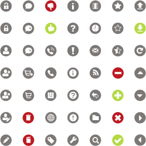

Below is a listing of all of the icons that have been approved for use in HTML applications.
This is the official icon palette and is used in conjunction with CSS
This CSS code allows for the use of one image sprite to control each icons display.
/* base class */
.icon {background-image: url(../images/icons.gif);
background-repeat: no-repeat;
width: 25px;
height: 25px;
display:inline-block;
}
/* individual icons */
.unlockIcon {background-position: 0 0;}
.lockIcon {background-position:1px -46px ;}
.userIcon {background-position: 1px -91px;}
.userAddIcon {background-position:1px -136px ;}
.userDeleteIcon {background-position: 1px -181px ;}
.userEditIcon {background-position: 1px -226px ;}
.editIcon {background-position:1px -271px ;}
.commentIcon {background-position:-45px 1px ;}
.commentAddIcon {background-position:-45px -46px ;}
.commentDeleteIcon {background-position:-45px -91px ;}
.cartAddIcon {background-position:-45px -136px ;}
.cartIcon {background-position:-45px -181px ;}
.trashIcon {background-position:-45px -226px ;}
.trashOpenIcon {background-position:-45px -271px ;}
.thumbDownIcon {background-position: -91px 1px;}
.thumbUpIcon {background-position: -91px -46px;}
.phoneRingIcon {background-position: -91px -91px;}
.phoneIcon {background-position: -91px -136px;}
.calIcon {background-position: -91px -181px;}
.globeIcon {background-position: -91px -226px;}
.tagIcon {background-position: -91px -271px;}
.infoIcon {background-position: -136px 1px;}
.questionIcon {background-position: -136px -46px;}
.warningIcon {background-position: -136px -136px;}
.toolIcon {background-position: -136px -271px;}
.gridIcon {background-position: -181px 1px;}
.clockIcon {background-position: -181px -46px;}
.messageIcon {background-position: -181px -91px;}
.rssIcon {background-position: -181px -136px;}
.directionalIcon {background-position: -181px -181px;}
.folderIcon {background-position: -181px -226px;}
.searchIcon {background-position: -181px -271px;}
.starIcon {background-position: -226px 1px;}
.starEmptyIcon {background-position: -226px -46px;}
.starHalfIcon {background-position: -226px -91px;}
.removeIcon {background-position: -226px -136px;}
.addIcon {background-position: -226px -181px;}
.cancelIcon {background-position: -226px -226px;}
.okIcon {background-position: -226px -271px;}
.uploadIcon {background-position: -271px 1px;}
.downloadIcon {background-position: -271px -46px;}
.refreshIcon {background-position: -271px -91px;}
.upIcon {background-position: -271px -136px;}
.downIcon {background-position: -271px -181px;}
.rightIcon {background-position: -271px -226px;}
.leftIcon {background-position: -271px -271px;}